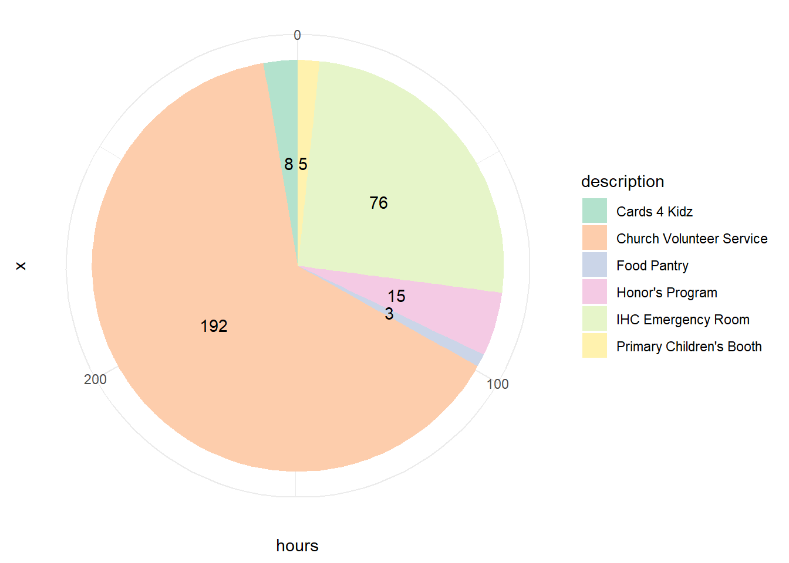

Service
Home | Conferences | R Projects | Publications | Medical Hours
Patient Interaction | Leadership | Service | Research | Shadowing
Pie Chart
As of June 22, 2023, I have spent 299 hours doing volunteer service.
Food Pantry
Description
I have been volunteering at the Springville Food Pantry sporadically over the last couple of months. My role there is to provide assistance to those coming to get food for their families, particularly helping those who are unable to speak English know what food they are choosing.
Learnings
This service opportunity taught me that I am lucky where I came from. I have had so many great opportunities in my life, and that is something that I need not take for granted. This experience has taught me that it is now my role to give back to those who are less fortunate.
Honor’s Program
Description
As a member of the Honor’s Program at UVU, during the first 2 semesters you are involved in the program, you are required to take a “Honor’s Colloquium” class. Part of this class required us to do service in the community that we wouldn’t otherwise do. Between both semesters, I was able to use some of the life experiences I had in order to help other students going through similar issues. My mother is a health aide at the local school district, and there was a student who was type one diabetic and was about to graduate. He had poor diabetes habits, and I was asked to work with him to provide tips and tricks to adjusting to living on your own with diabetes. That was roughly 8 of these hours.
The other 7 hours came as I met with other individual students. I shared things I had learned from my experiences, such as with Station 1, the things I shared in my Wolverine Story, among other things. My goal here was to help each person I met with know that there is a place for them here.
Learnings
Overall, the thing I learned the most with these experiences was that I have a need to give back. I have had many people help me along my path, guiding me through diabetes, through school, and through general life challenges. I need to give back to others and be the same voice for them that I had in my life. Overall, students need to know they are not alone, that they are not “weirdos”, and this service helped me convey that to others. All in all, it helped me step outside of myself and be aware of the needs and struggles of others.
IHC Emergency Room
Description
I volunteered in the emergency room at the American Fork Intermountain Healthcare Hospital. My role in this position was to make the patient comfortable. I was not there to provide care; instead my role was to offer blankets, toys for kids, or food and beverages. I was involved with this for 2 months in 2021 (ended due to COVID) and then 4 months (and still ongoing) in 2022, giving roughly 2 hours a week here.
Learnings
I loved this service opportunity, as I was able to help others in the height of their struggles while seeing how an emergency room operates. Much of this service was during one of the peaks of the pandemic, so I was able to understand a little more how the pandemic effected caregivers.
Cards 4 Kidz
Description
I am currently in the middle of this service opportunity. My time in the hospital was stressful and traumatic, and unfortunately, I spent a lot of time there. I learned first hand how having people reach out helped lift my spirits. With that in mind, I found this service opportunity with the Loma Linda University Hospital. I have been making notes for these young patients that will be delivered to them with their breakfast. I have focused on making them silly and fun, helping them take their minds off the fact that they are in the hospital. I have been working on this for 2 months now, with an average of 1 hour a week being devoted to this project.
Learnings
What I have learned the most from this service is that looking outside yourself is the means by which amazing things can happen. When I was in the hospital, I had so many different people touch my life, and they made it easier for me to continue fighting the illnesses I had. I can provide an empathetic approach to making their days better, and that is the way by which I can give back to those that helped me.
Church Volunteer Service
Description
As a member of my church, I made the decision to pursue missionary service in the Kansas City, MO area. It was here that I spent 2 years serving those great people. The majority of that time was spent proselyting and supporting local church units, but I spent roughly 2 hours a week doing community service. At different points of time over the two years, I worked at a food pantry, set up a community event, worked at a thrift store, spent countless hours doing yard work, among other things.
Learnings
This was the first time in my life where I feel I truly looked outside of myself. I was 19 years old when I began this service, and I felt like I truly dived in with the communities in which I lived. I feel that I learned empathy, love, and how important a kind word is, regardless of the person, the location, or the circumstance. It taught me to be less judgmental, and it increased my ability to strive to understand everybody.
Primary Children’s Booth
Description
When I was in the Primary Children’s Medical Hospital, there were events that were hosted to help us patients get our minds off of things. One time when I was there, it was the beginning of college football season, and the mascots from two local rival colleges came handing out toys, coloring books, stress balls, and high fives. It truly lifted my spirits as a patient.
With the research that I do on campus, I knew that I wanted to implement some of the same sort of event at Primary Children’s. Seeing as I am studying how having medical conditions leads to science motivation, I want to provide an event where the science behind the medical care is made fun. We plan on teaching how x-rays work, what the heart looks like, what laboratory work looks like, etc. I applied for and was granted an URSCA Grant to pay for the toys and such needed for the event. Some of that funding is also going to an assistant student employee that will work underneath me, assisting me in this project. I will not be funded for this project, but he will, allowing him to add things to his medical school application.
Learnings
So far, the majority of the work has been with preparing the grant. Now that we are approved, we need to make a connection with those at Primary Children’s. I am excited to report back on some of my learnings from this project.